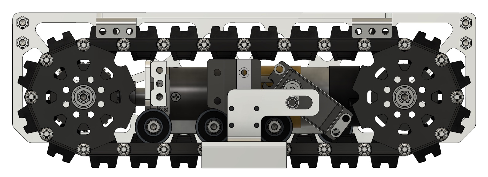

03 Humanoid High Traction Magnetic Feet
In progress, design stage

Humanoid robots keep improving, but one of their most common flaws is in the legs and feet. They don't have the traction or the strength to get past the obstacles people deal with in a workplace.
The point of this project is to pair an automated crane with a humanoid on high-traction treaded feet, so the two can move heavy objects together. The test setup is an x, y, z gantry crane and a Unitree R1.
I designed the feet myself. They mount to the bottom of the R1 and run off the R1's battery. They also have magnets that can be actuated to add traction on steel, which lets the robot climb steeper angles than it could without them.

This is a work in progress, and the CAD above is where it stands so far.